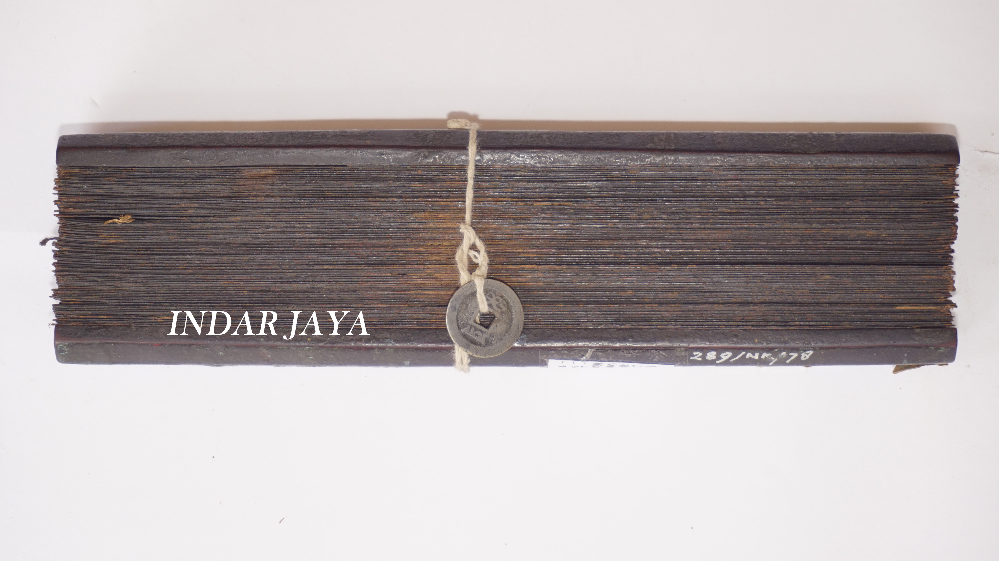
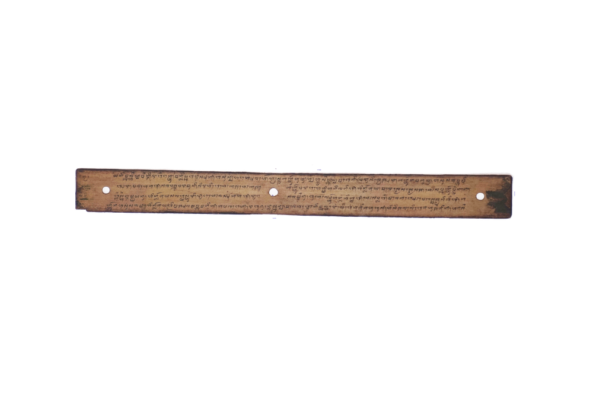

-

Ejaan Latin:
60. Empat kalweqna, jari dengan lalu, yen apa kasukan sida, ejin si ni, taoq da si lepas uni, si ne aran si Arkab. Lamon sida sukaq tuloq? nagri, utawya dasan, ni Arkab manikang, ne sopoqna jyaran sine, lweq laloq pangadun, pan pangwasa ndeq naraq tanding, ini aran baida, rowangna baribu-ribu, yen da dait pakiwuhan, ya ne manikang, mapan ya baruang sakti, rwang nama endah-endah. Ni sopoq si Ahad arani, lamun sida, suka leq tu nina, eni manikang paliteq, utawya musuh agung, ya kwasa marayang diriq, bau isiq parentah, sida mauq sukur, bagya kasukaq Allah, laiq sida, ule nane da paygrin, baktinda maraq si wah. Lan pajaoq larangan Hyang Widi, essorang diqta, laiq
Arti Indonesia:
60. Empat jumlahnya, untuk teman tuan, apa saja kemauan tuan, jin ini, tempat menyampaikannya, ia bemama si Arkab. Kalau tuan suka menaruh negeri, atau dusun, ini si Arkab tuan suruh, ini yang bemama Yara, banyak sekali gunanya, karena kesaktiannya tiada tandingnya, ini bemama Baida, temanrtya beribu-ribu, bila tuan mendapat kesusahan, inilah yang tuan suruh, karena ia Beruang Sakti, macam-macam nama temannya. Yang satu ini bemama si Ahad, kalau tuan, berhajat kepada orang wanita, ini yang tuan suruh bawa, atau ada musuh besar, dia mampu melawannya, dapat tuan perintahkan, tuan bersyukur mendapat, bahagia berkat Allah, kepada tuan, sekarang tuan tingkatkan, baktimu seperti yang sudah. Dan jauhilah larangan Tuhan, rendahkan dirimu, terhadap sesama kita,
Arti Inggris:
60